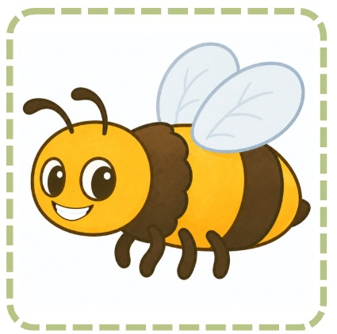
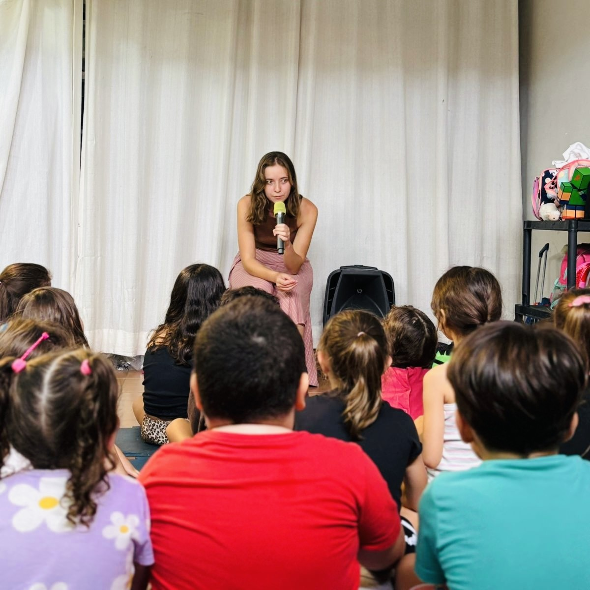

Na minha escola
Uma assessoria pedagógica para estruturar a implementação do Método Flores, formar a equipe e acompanhar o percurso de alfabetização.
Ver assessoria para escolasINSTRUÇÃO FÔNICA · ALFABETIZAÇÃO REAL
O Método Flores ensina a ler através da instrução fônica: um caminho lúdico, ordenado, regrado, explícito e sensorial — criado por quem vive alfabetização todos os dias.
O PONTO DE PARTIDA
Avaliações do INEP mostram que 34% das crianças chegam ao final do 2º ano do Ensino Fundamental sem atingir o padrão adequado de alfabetização. Como essas provas são aplicadas com alunos matriculados e presentes, fica claro que a culpa não é da evasão escolar, mas sim da ineficácia do método de ensino.
O Método Flores nasceu para oferecer um caminho claro, explícito e estruturado do som à leitura.
A BASE CIENTÍFICA
A instrução Fônica tem como base o Principio Alfabético. O Principio Alfabético é a noção de que as letras estão relacionados às unidades sonoras mentais, que podem ser realizadas na fala. Isto é: cada letra produz um som.
Ao dizer: ffffaca, prolongando o som inicial, é evidenciado o som [f] (‘fff’), feito pela letra F. Em sala de aula, deve ser dito à criança que a letra ‘éfe’ faz o som ‘fff’. De modo breve, esse seria o modelo de ensino do Princípio Alfabético. Embora o ensino pode ser feito de modo técnico -secamente, a maneira mais recomendada é uma abordagem lúdica, envolvendo áreas criativas. Por exemplo, o som [s] (‘sss’), parece o som de uma serpente. O educador pode utilizar isso ao seu favor, agregando músicas, brincadeiras que tratem da temática ‘serpente’.
Vale ressaltar que a relação letra-som não é ‘monogâmica’ no português brasileiro. Há letras no alfabeto que produzem mais de um som (C, G, S etc.). Há letra no alfabeto que não se relaciona com som nenhum (H). Há, também, o caso em que duas letras podem unir-se para representar apenas um único som (SS, RR, CH etc.). Ainda assim, essa complexidade não impede, de modo algum, na aplicação do método.
Primordialmente, o educador deve ensinar a relação um para um. Um som para uma letra. Dessa forma, uma criança aos 4 anos já pode ser capaz de relacionar cada letra do alfabeto a um som e, unindo esses ‘sons’ ela será capaz de decodificar uma palavra escrita, isto é, ler.
O MÉTODO FLORES
Cinco qualidades organizam o método. O componente sensorial atravessa o lúdico com sons, imagens, movimentos e materiais. Explore cada pétala para conhecer o seu papel.
O MATERIAL
Ensinar os sons das letras repetindo exaustivamente "ffff" ou "ssss" pode se tornar abstrato e cansativo para os pequenos.
Para transformar essa etapa, criamos as Fichas dos Sons. São 32 fichas ilustradas, onde cada som é representado por uma situação lúdica do cotidiano. Em vez de decorar um som isolado, a criança faz uma associação visual divertida, tornando o aprendizado muito mais leve, palpável e engajador.


QUERO APLICAR O MÉTODO
Uma assessoria pedagógica para estruturar a implementação do Método Flores, formar a equipe e acompanhar o percurso de alfabetização.
Ver assessoria para escolasUm curso pensado para famílias aplicarem o método em casa, passo a passo. Em breve, você poderá conhecer todos os detalhes.
Quero receber as novidadesQUEM SOMOS

Professora, há 14 anos, de Língua Portuguesa e de Redação na rede privada de Belo Horizonte. Professora autora de materiais didáticos para editoras de grande porte e autora de conteúdo audiovisual e escrito para o MEC e multinacionais no ramo da educação.
Formação: Graduada em Letras/Língua Portuguesa e mestre em Linguística do Texto e do Discurso pela UFMG.
Produtora de materiais fônicos para escolas, formadora de métodos fônicos para escolas, professora alfabetizadora e professora de pais que querem alfabetizar.
Formação: MEC — Práticas Continuadas em Alfabetização (2021) e Fonética e Fonologia do Português brasileiro (2022).
O FUTURO
Somos 8 irmãs reunindo tudo o que aprendemos sobre educação e maternidade real em uma única plataforma. Um espaço onde pais e mães vão encontrar orientação para criar os filhos em várias frentes — comportamento, disciplina, música, desenho, brincadeiras, literatura, sexualidade e, claro, alfabetização.
A missão é simples: ajudar você a cultivar um belo jardim dentro da sua casa.
Quero entrar na lista de espera